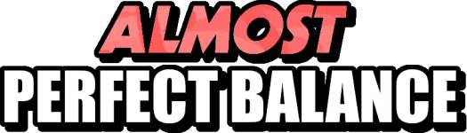
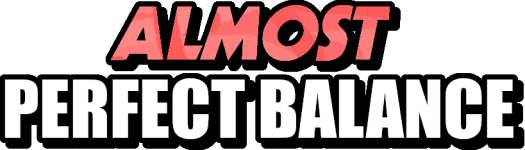

|
| We've all seen the "Almost Perfect Balance" while playing the classic games but we didn't really pay attention to it But this time , you will have to becuase its the objective of the mod ; Make your structure meta-stable to win ! |  |
 |
Walkthrough Soonish |